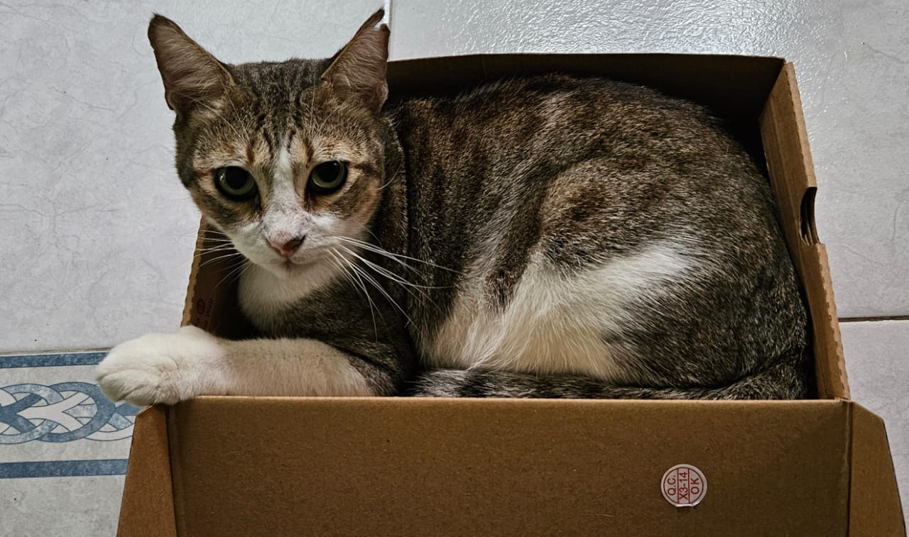
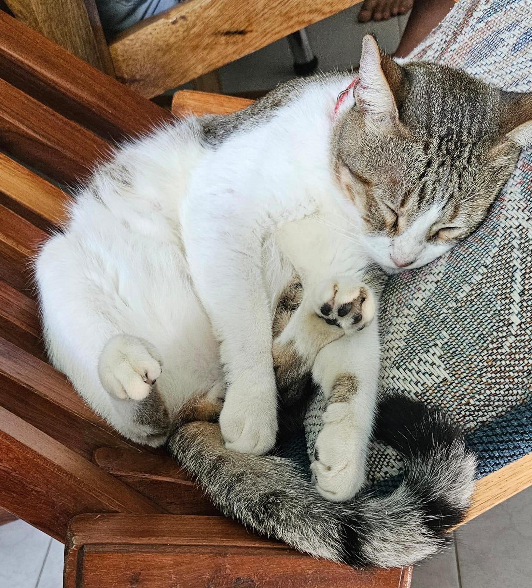

Mis lugares favoritos
Tengo un talento especial para encontrar los rincones más cómodos y tranquilos de la casa. Mí lugar favorito es el silla de la sala, especialmente si tiene un cojín encima. Cuando hace sol, siempre me encuentras cerca de la ventana, observando la calle o tomando una siesta. Aquí comparto algunos de sus rincones favoritos.

